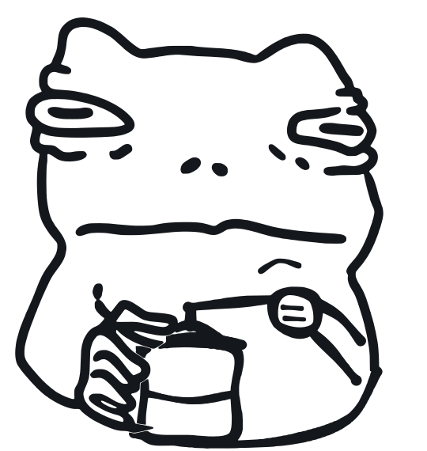

ya pasó
ya pasóEtapa 4 · Componentes
piezas del sitio
botón sticker · estados
tarjeta de carta (tracklist)
B
Lado B
fríos
01ice lattelatte pero con hielo · opcional caramelo, vainilla o avellana$ 5.500
02espresso tonicdoble espresso + tónica$ 6.500
03affogatodoble espresso + helado de mantecol$ 7.000
evento pasado
ya pasóestados

cargandomoliendo…

confirmación¡listo! te respondemos pronto
WhatsApp flotante (solo celular), 60 px
microinteracciones
Disco que giraHero y eventos. 6 s por vuelta, lineal, sin fin.CSS
Rana que respiraSube 5 px y vuelve. 3,2 s, ease-in-out.CSS
Cinta de textoRecorre la pantalla en 30 s. Se pausa al pasar el mouse.CSS
Botón stickerSe endereza y despega al hover; se pega al tocar. 150 ms.CSS
CargandoLa rana muele: la manija gira 1 vuelta cada 1,2 s.SVG + CSS
Mensaje enviadoToast con la rana guiñando, se va solo a los 4 s.CSS
Asomarse en el pieLa rana sube 20 px cuando el pie entra en pantalla.IntersectionObserver
Movimiento reducidoCon prefers-reduced-motion todo queda quieto.CSS